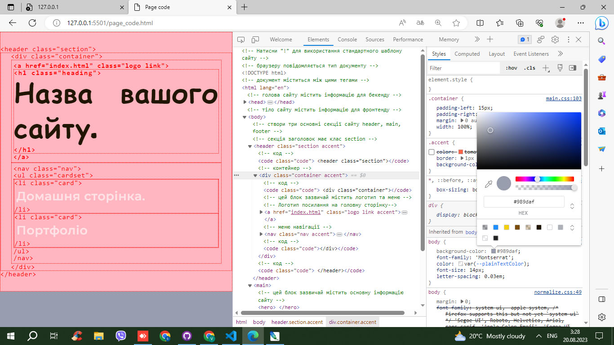

SomeSite
Домашня сторінка.
Моє портфоліо.
Код сторінки.
Сайт на GitHub
Самостійне навчання з w3schools
Компонент 'стаття' - article.html
Компонент 'логотип' - logo.html
Portfolio of projects
IT cases
isNotFound
Chrome -> ... > Розширені > Інструменти розробника
Ctrl
+
Shift
+
I

Pagecode devtools HTML CSS>
Pagecode
PrtSc
Learn how to save PrtSc images with PS